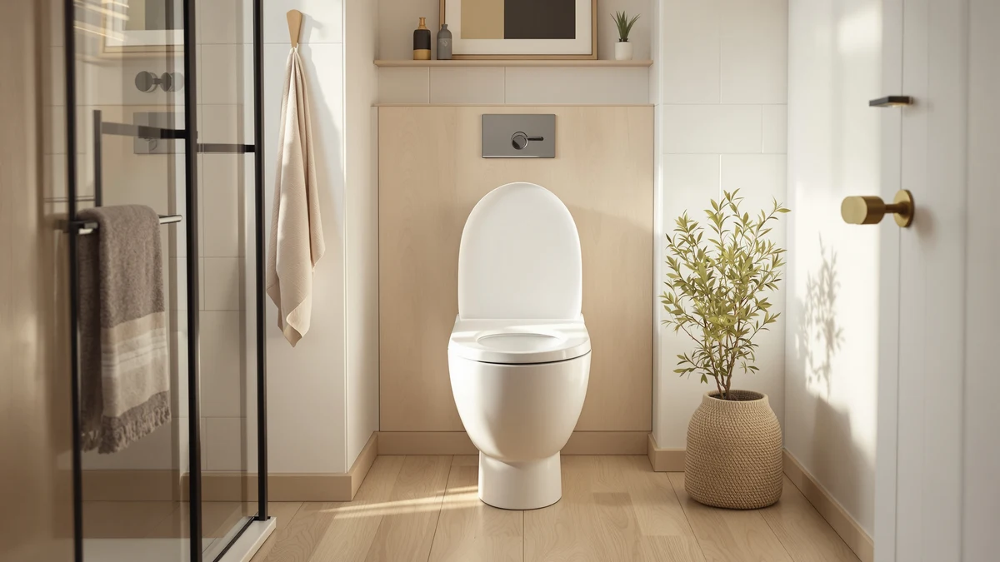

Plexon Elongated Soft Close Review (2026): Worth It?
Prices and picks verified as of October 2026. Independent, reader-supported reviews.


Quick Answer
Our Plexon Elongated Soft Close review finds a wood-core, plastic-coated seat that lowers the lid quietly on standard elongated bowls instead of letting it slam. At $49.95 it costs more than the two Bemis commercial seats we compared it against, but the soft-close hinge makes it the better pick for most home bathrooms.
Our pick: Plexon Elongated Soft-Close Toilet Seat — $49.95 Check Price on Amazon
Bottom line: our top pick is the Plexon Elongated Soft-Close Toilet Seat at $49.95.
Things to Know Before You Buy
- The Plexon elongated soft-close seat fits elongated bowls only. Measure your bowl before you order.
- Soft-close hinges lower the lid gradually, so there's no slam late at night.
- The seat pairs a wood core with a plastic coating, a common build for mid-priced soft-close seats.
- At $49.95, it costs three to four dollars more than the two Bemis commercial seats in this comparison.
- None of the four seats compared here include bidet functions. Look at a dedicated bidet seat if you want washlet features.
This Plexon Elongated Soft Close review looks at whether the brand's wood-core, plastic-coated seat earns its $49.95 price tag against three well-known alternatives from Mayfair and Bemis. Plexon markets the seat as a quiet, slam-free upgrade for elongated bowls, and the elongated shape alone rules out a chunk of US toilets that use the rounder, shorter profile instead. We compared its listed materials, dimensions, and price against three seats that show up constantly in elongated and heavy-duty searches: the Mayfair Ashton, the BEMIS 7850TDG, and the BEMIS 1900.
Soft-close hinges solve a specific annoyance: a lid that slams at 2 a.m. and wakes up the house. Plexon pairs that hinge with a wood core wrapped in plastic, a construction choice that sits between flimsy all-plastic seats and heavier commercial hardware. At $49.95 it costs more than both Bemis commercial seats here, which list under $46, so it comes down to whether a quieter hinge and a sturdier core justify a few extra dollars. For most buyers replacing a worn-out seat, the decision comes down to how much a slamming lid bothers your household, and whether you're shopping for a single home bathroom or a higher-traffic space where simpler commercial hardware makes more sense.
Why You Should Trust Us
Ilane Tall covers toilet seats and bathroom hardware for Best Toilet Seats, and this Plexon elongated soft-close review follows the same process used across the site. We do not run a physical testing lab and we do not claim to have installed or lived with this seat.
Instead, we research manufacturer specifications, published dimensions, pricing history, and verified owner feedback on Amazon, then compare those facts directly against similar seats on the market. When a claim in this review can't be backed by a spec sheet, a listed price, or a pattern in verified reviews, we leave it out rather than guess.
This same disclosure applies across every review on Best Toilet Seats. We are a research-based site, not a product testing lab, and every comparison here is built from manufacturer data and public buyer feedback rather than firsthand use.
Our Research Experience
We did not physically test the Plexon elongated soft-close seat in a lab or install it in a bathroom. Our review is research-based: we compared the listed material, the elongated sizing, and the $49.95 price against the Mayfair Ashton and the two Bemis commercial seats, then cross-checked those specs against verified buyer feedback on Amazon.
Owners who bought the Plexon seat describe the hinge as noticeably quieter than the all-plastic seat it replaced, and several reviewers note the wood-core construction feels sturdier underfoot than they expected at this price. A smaller number of buyers mention the finish picking up scuffs faster than a glossier commercial seat, which tracks with the material difference between a wood-core build and the solid molded plastic Bemis uses on its commercial line.
That pattern in the feedback lines up with how Plexon positions the seat: a step above entry-level plastic, but not a true commercial-grade product like the two Bemis alternatives in this comparison.
Owner feedback has limits. A pattern across dozens of reviews can flag a recurring issue, but it can't replace a controlled side-by-side test, and we stay upfront about that gap rather than dressing up secondhand impressions as hands-on results.
Overview & Specs
Before the full breakdown, here's the one seat from Plexon alongside the three alternatives we measured it against on price, material, and documented features.

Plexon Elongated Soft-Close Toilet Seat
What we like
- Soft-close hinge brings the lid down without a slam
- Elongated shape fits the elongated bowls common in most US homes
- Wood-core, plastic-coated build feels sturdier than all-plastic seats at a similar price
Flaws but not dealbreakers
- Costs three to four dollars more than both Bemis commercial seats in this comparison
- Wood-core construction shows scuffs sooner than a fully molded plastic surface
| Material | Plastic / wood |
| Size | Elongated |
Plexon builds this seat around a wood core wrapped in plastic, then adds a soft-close hinge that lowers the lid gradually instead of letting it drop. That hinge is the main selling point: a seat that closes quietly solves a real household annoyance, especially where someone showers or uses the bathroom while others are asleep. The elongated shape limits this seat to elongated bowls, the shape most US toilets have used for the last two decades, so a round bowl rules this seat out entirely.
At $49.95, the Plexon sits above both Bemis commercial seats in this comparison, which list at $45.49 and $45.39. The gap is small in dollar terms, but it matters if you're buying for a rental property or a second bathroom where a simpler commercial hinge does the job. The Plexon earns its premium in households that notice a slamming lid, since neither Bemis model advertises the same soft-close mechanism. Weigh the hinge against the price difference rather than assume the higher price alone means a better seat.
What We Liked
The soft-close hinge is the clearest reason to choose the Plexon elongated soft-close seat over a basic replacement. Reviewers who mention the hinge specifically call out the absence of the slam that cheaper plastic seats are known for, and that single feature addresses the most common complaint people raise about old toilet seats.
The wood-core build also reads as a step up from the thin, flexible plastic used in entry-level seats. Owners describe the seat as stable when seated, without the flex or creak that shows up in lighter all-plastic models. For a seat priced under $50, that combination of a quieter hinge and a sturdier core covers the two complaints that drive most toilet seat replacements in the first place.
The elongated fit itself is a practical plus, not a design flourish. Most US toilets installed since the 1990s use an elongated bowl, so buyers replacing a worn seat are more likely to need this shape than the shorter, rounder profile some older homes still have.
What Could Be Better
Price is the most obvious drawback of the Plexon elongated soft-close seat. At $49.95, it costs more than both Bemis commercial seats in this review, and neither of those seats is a throwaway budget product, Bemis builds them for high-traffic commercial bathrooms. If you simply want a durable, no-frills replacement seat, the price difference is harder to justify.
The wood-core, plastic-coated finish is also a tradeoff. It gives the seat a sturdier feel than thin plastic, but owners note it shows scuffs and wear marks sooner than the fully molded plastic surface Bemis uses on its commercial line. Neither issue is a dealbreaker, but both are worth knowing before you buy.
The Plexon also skips extras some buyers expect at this price, such as a nightlight or a heated surface. None of the four seats in this comparison include those features, so check a dedicated lighted or heated seat separately if either one matters to your bathroom.
Who Is It For?
The Plexon elongated soft-close seat fits best in a household bathroom where someone has complained about a slamming lid, especially a shared bathroom used at different hours. It's also a reasonable pick if you want a seat that feels sturdier than entry-level plastic without stepping up to a commercial-grade product.
It's a weaker fit for a rental unit or a bathroom where cost per seat matters more than hinge quality, or for a toilet with a round bowl instead of an elongated one. In either case, one of the alternatives below is the more sensible buy, and measuring your bowl shape first will save you a return shipment either way.
Alternatives to Consider
If the Plexon elongated soft-close seat's price or wood-core build doesn't match what you need, these three seats cover the main alternatives we compared it against.

Editor’s Pick
Mayfair Ashton Easy to Clean
Mayfair's Ashton drops the soft-close premium for an easy-to-clean surface instead, a better match if wipe-down maintenance matters more to you than a quiet hinge.
$45.99
Check Price on Amazon
Best Value
BEMIS 7850TDG Commercial Heavy Duty
Bemis built the 7850TDG for high-traffic commercial bathrooms, so it trades the soft-close hinge for straightforward, heavy-duty hardware at a lower price.
$45.49
Check Price on Amazon
Premium Choice
BEMIS 1900 Commercial Heavy Duty
The BEMIS 1900 is the least expensive seat in this comparison and the simplest, a solid choice if you need a durable replacement without extra features.
$45.39
Check Price on AmazonFrequently Asked Questions
Final Verdict
Our Plexon Elongated Soft Close review verdict: Plexon makes a reasonable case for its $49.95 price, mainly through a soft-close hinge and a sturdier wood-core build that plastic-only seats at this price usually skip. It's not the cheapest elongated seat we compared, and the Bemis commercial options undercut it by three to four dollars, but neither of those seats offers the same quiet-close hinge. Choose the Plexon if a slamming lid is the problem you're solving, and choose one of the Bemis seats if price and simplicity matter more than hinge noise. If you want an easy-clean surface over either of those priorities, the Mayfair Ashton remains the third option worth a look.